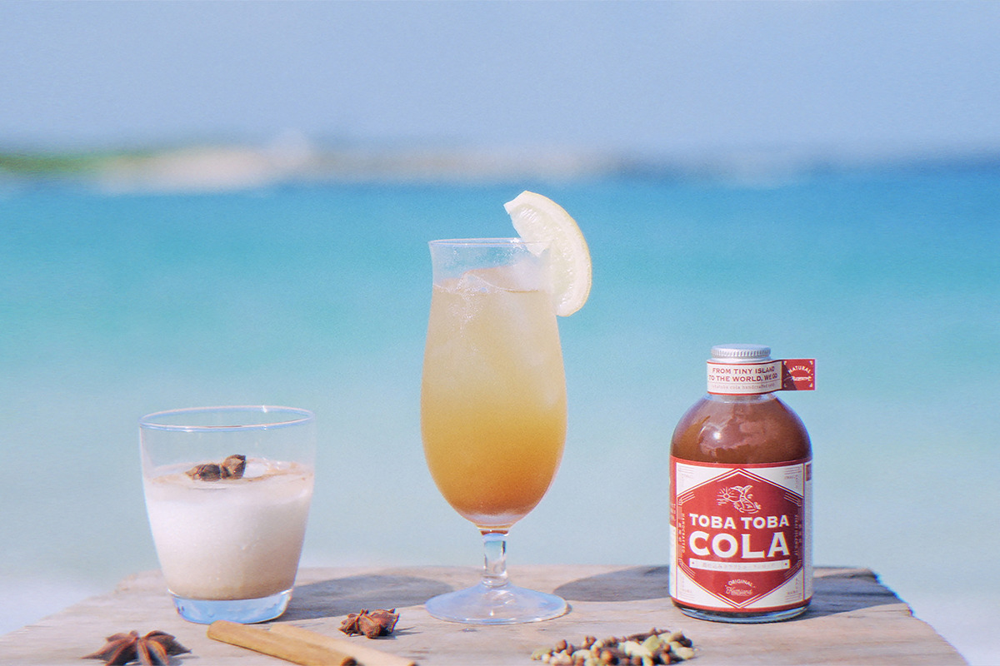
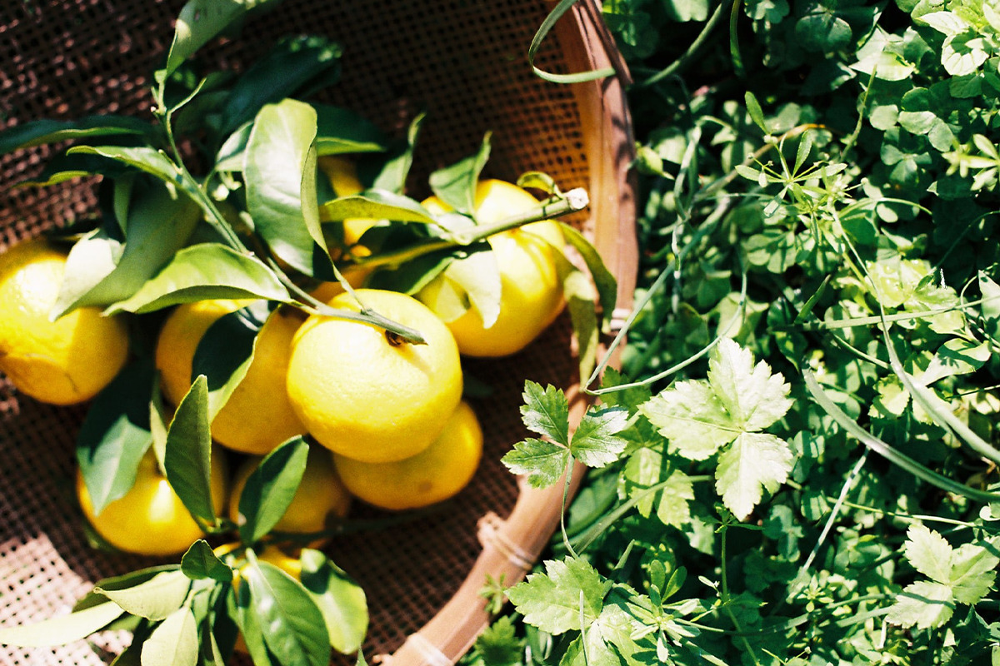
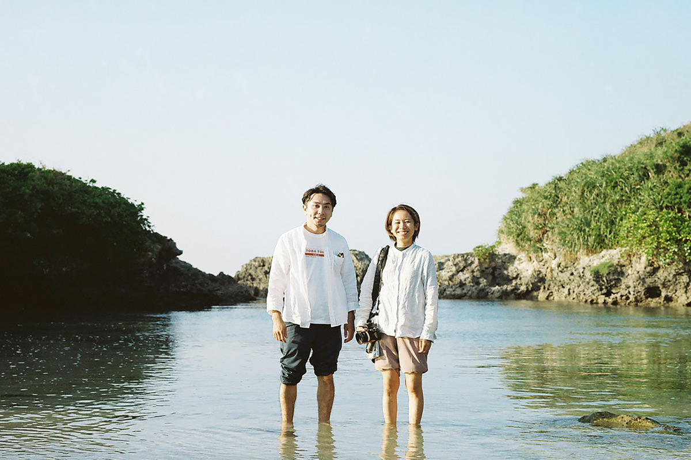
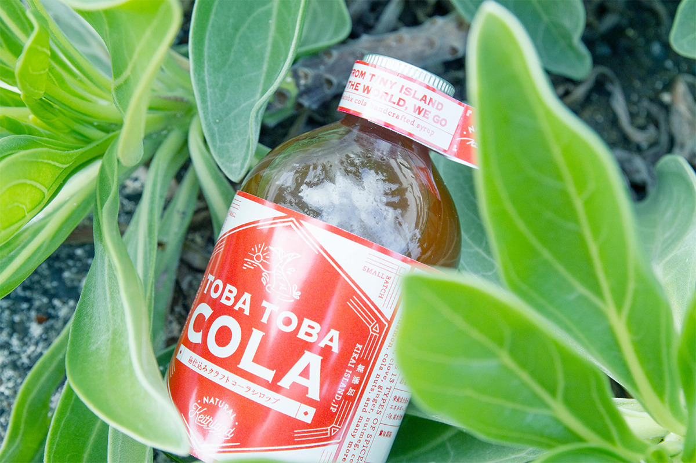
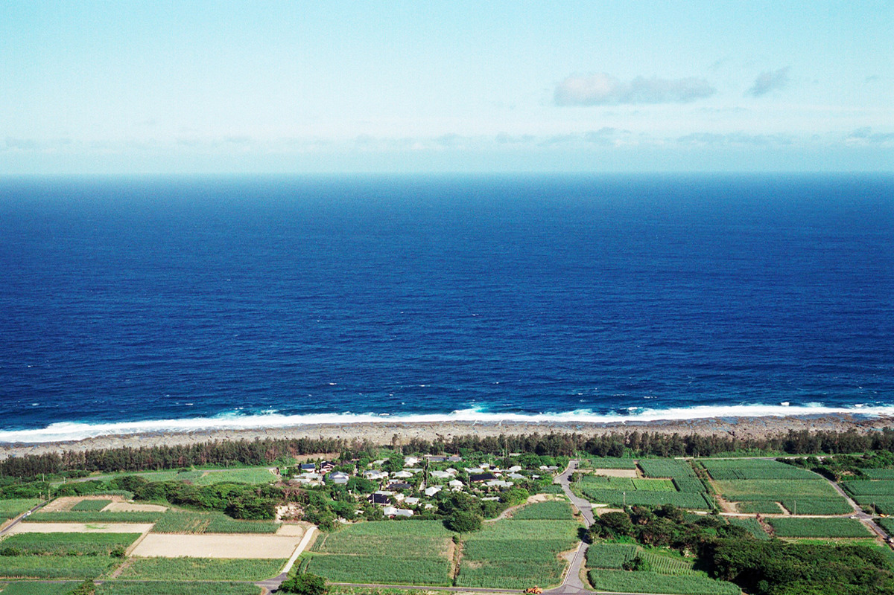
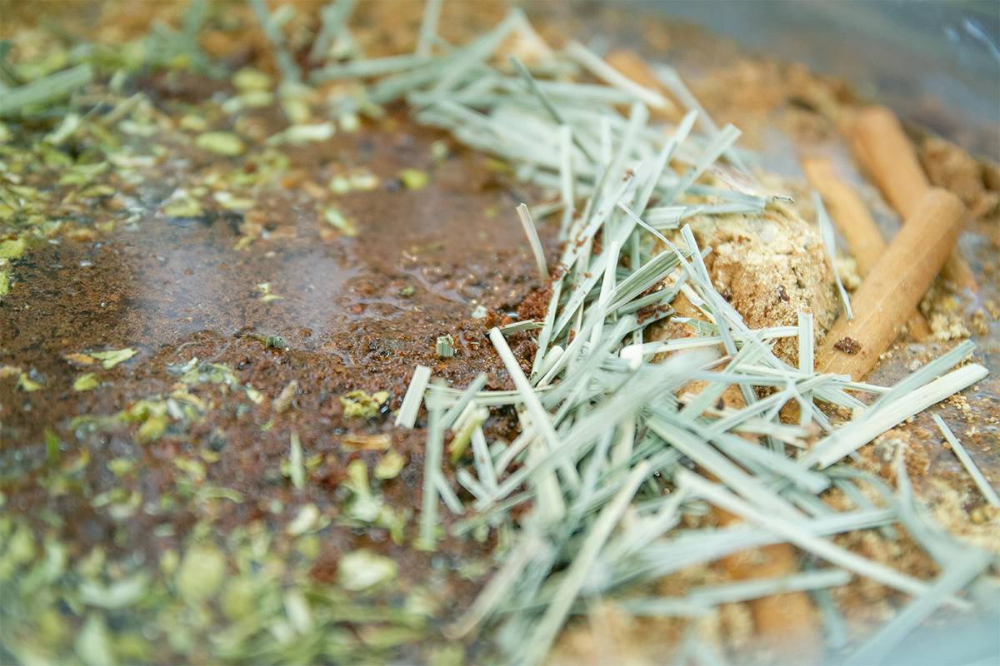
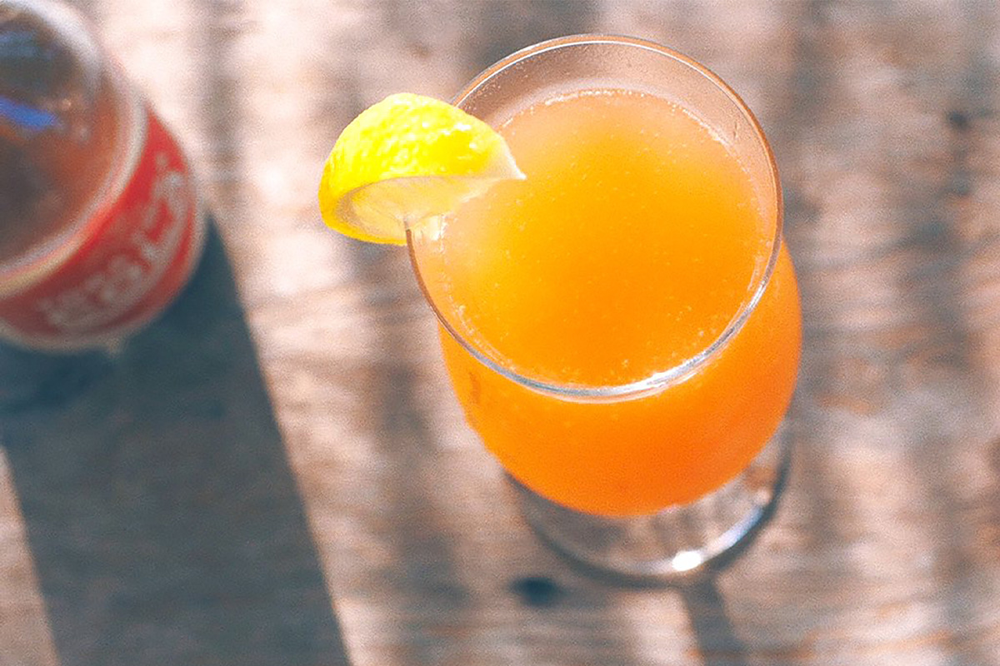
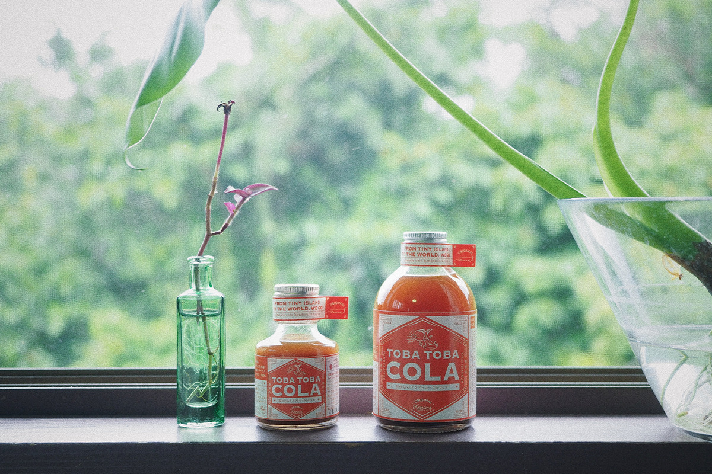
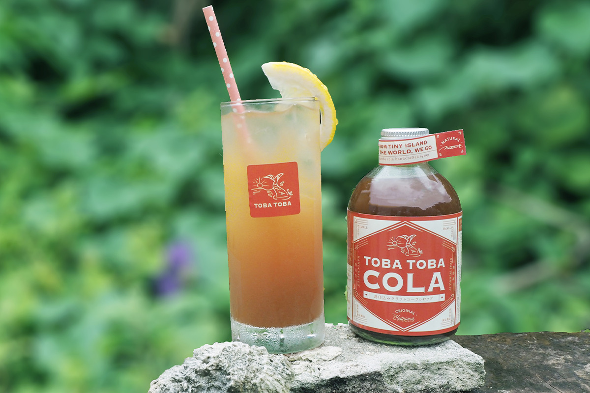

Префектура Кагосима · Кикай · еда
TOBA TOBA COLA: крафтовая кола с острова Кикай из забытых мандаринов и 14 специй

Кикай, небольшой коралловый остров к востоку от Амами-Осимы, славится старинным сортом мандаринов, которые почти перестали есть. Супруги Наоко и Кит решили, что плодам не стоит гнить на ветках, и сварили из них колу.
Остров
Мандарины, которые никто не собирал
Кикай входит в архипелаг Амами в префектуре Кагосима и лежит к востоку от Амами-Осимы. Остров небольшой: если спокойно ехать на машине по кольцевой дороге, его можно объехать примерно за 45 минут. Он целиком сложен из кораллового рифа и до сих пор поднимается из моря со скоростью около 1,8 мм в год, такое встречается в мире редко. Коралловая почва богата минералами, поэтому здесь хорошо растут сахарный тростник и кунжут. Вокруг нетронутое синее море, а в деревнях то тут, то там сохранились ограды, сложенные из кораллового камня.

Главная гордость Кикая это старинный местный сорт мандаринов. У них сильный аромат, заметная кислинка и много питательных веществ, а сорт настолько редкий, что его изучали в Университете Кагосимы. Но когда фрукты стало проще купить в супермаркете, островные мандарины постепенно перестали есть.
Идея
Кола против пищевых отходов

Наоко и Кит познакомились в Сингапуре. Однажды они приехали на Кикай, родной остров Наоко, и увидели, как неубранные мандарины гниют прямо на деревьях. Супругам захотелось что-то с этим сделать. За основу они взяли травяные напитки, которые пили в Сингапуре, и начали экспериментировать. Так появилась TOBA TOBA COLA.
Резкую кислинку и лёгкую терпкость островных мандаринов они превратили в главную черту вкуса. К ним добавили неочищенный тростниковый сахар с Кикая и 14 специй со всего мира. Получился сироп без добавок и красителей с мягким и спокойным вкусом.
«Тоба-тоба» на диалекте Кикая, который считается исчезающим языком, означает радостное возбуждение, когда кажется, что вот-вот взлетишь. В названии собраны продукты, культура и характер острова, и звучит оно очень тепло.

Принципы
Сделано на острове для всего мира

Свою работу TOBA TOBA строит на трёх принципах. Первый: делать вещи для всего мира, живя на отдалённом острове. Логистика, информация и связи здесь даются непросто, зато у острова густая культура, редкие растения и животные и богатая природа. Создатели уверены, что рассказывать о нём можно откуда угодно, и отправляют свою колу за море.
Второй принцип касается исчезающей культуры. Супруги изучают уходящие диалекты, фольклор и обычаи острова, чтобы передать их следующему поколению.
Третий принцип это бережное отношение к природе. В дело идут местные ресурсы, которые иначе пропали бы, сироп не производят впрок, чтобы ничего не выбрасывать. Упаковку стараются делать без пластика, а ещё помогают острову справляться с морским мусором.
Вкус
Четырнадцать специй

Каждую партию варят вручную на Кикае. К мандаринам добавляют местный тростниковый сахар, орех кола и ещё десяток специй. Орех кола экстрагируют по собственному способу: создатели хотели вернуться к тому, какой кола была изначально. Часть специй мелют вручную, чтобы вкус получился округлым.
Сироп подходит не только к газированной воде: его добавляют в алкоголь, горячее молоко и даже в блюда.
Рецепты
Как пить

Классическая кола. Хорошо встряхните бутылку и смешайте сироп с холодной газированной водой в пропорции 1:4, лучше всего с сильногазированной. Если сначала налить в стакан воду, пены будет меньше. Долька лимона сделает вкус ещё свежее.
Молочная кола в духе чая масала. Добавьте немного сиропа в молоко и хорошо размешайте. Получается мягкая сладость со вспышкой специй.
Кола-хайбол. Смешайте хорошо охлаждённую газированную воду с виски, а потом добавьте сироп.
Можно влить немного сиропа в горячее вино и медленно размешать, чтобы получилось подобие глинтвейна. Рекомендуем и местный вариант: несколько капель в сётю из чёрного сахара, который делают на островах Амами.

В составе сиропа островные мандарины и тростниковый сахар с Кикая, сахар, кардамон, гвоздика, имбирь, мускатный орех, кориандр, корица, орех кола и другие специи.

TOBA TOBA COLA
- Адрес
- префектура Кагосима, район Осима, посёлок Кикай (Keithland)
- Сайт
- tobatoba.jp